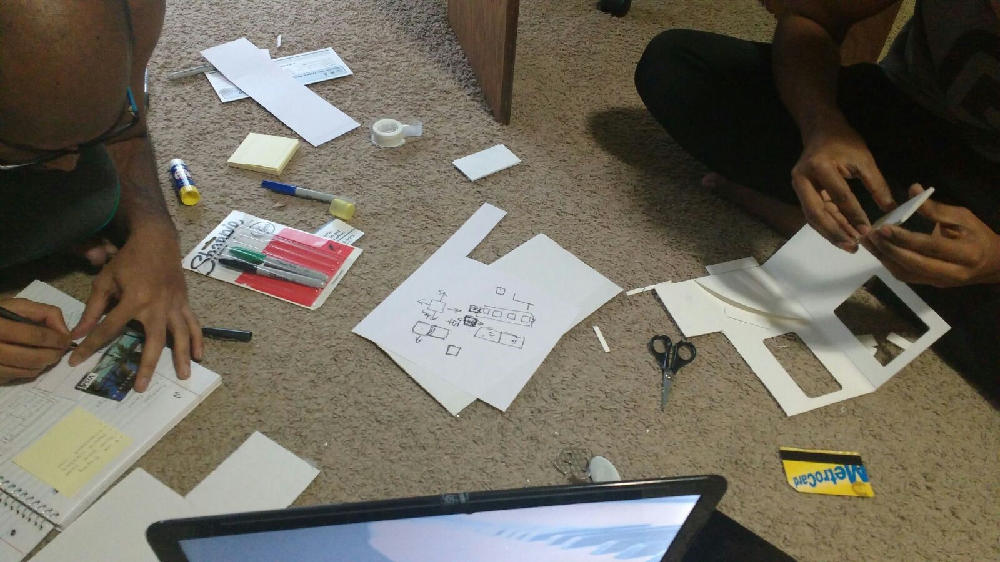

Overview
Problem
People of a society manage a lot of responsibilities and have taken to using various plastic cards to help support their identification, monetary transaction, and membership to a myriad of services. The use of cards has escalated to a broad extent that instead of using their wallets or handbags people have started using card holders, to manage their multiple cards. In whatever manner, locating and using a card from a group of others can be slow, cumbersome, and annoying to an individual.
My Role
Interaction Designer - Lead the creation of paper prototypes and physical prototype. Create the workflow of the design solution. Test and redesign the prototypes
Research
User Survey
The survey was designed to gather information on users' card usage, how many cards they carry and what would be the common concerns about using multiple cards daily
Insights
More than 75% of the individuals reported of having more than 3 types of cards
More than 50% of the individuals carry 3 or more than 3 payment cards with them.
45% of the individuals interviewed were worried about the security of their cards.
- Create a system that makes managing multiple cards easier
- Reduce the security concerns related to payment cards
- Utilize existing technologies without disrupting the present infrastructure
Requirements
Ideation
Initial sketches
{kind=link}
{kind=link}
{kind=link}
Final concept: OneCard
{kind=link}
{kind=link}
We chose to move forward with a digital card system that can have multiple utilities. The system fulfilled most of our requirements out of all other ideas.
- OneCard will feature an e-ink display to display dynamic information
- It will retain chip and mag-stripe technology to be compatible with current infrastructure
- An inclusion of fingerprint scanner should ease the security concerns of our users
- It will have a touchpad for interacting and navigating the system
Storyboards
{kind=link}
{kind=link}
{kind=link}
Design
Initial Walkthrough
- The card must be usable with one hand.
- Name and address are sensitive information and it’s not necessary to be always present.
- Navigation becomes cumbersome when number of cards increase.
- We decided to move identification details into the digital screen rather than static display to maintain privacy
- Menu interface created instead of listing out all cards together
Physical Prototype
The physical prototype was made of cardboard while the screens were made out of paper. The cutout acted as the placeholder for screen and screens were changed to create the effect of interaction
{kind=link}
{kind=link}
Card Interface Flow
{kind=link}
Mobile App Interface
Usability Tests
Dairy Study
- Card should be sturdy enough for everyday use
- The smart card battery ought to be long lasting
- Navigation within the card should be as quick as possible
- The consequence around fingerprint theft or loss of card is severe
- Payment and managing other cards was found to be easy
Findings
User Testing
- Assume you are at shopping mall with smart card. Pay the bill for a pair of shirt you bought using the Chase credit card
- Assume you are entering in the gym. Scan your gym membership card using this smart card
- Assume you are at the ATM machine. Withdraw cash using the PNC debit card
Problems
- Participants believed that the e-ink display is touch sensitive and were trying to interact with it instead of touch sensor
- Participants raised concerns over the security of their fingerprint incase card is stolen or lost
Findings
- Participants liked that the card functioned as an independent device without the need of a smartphone
- Participants expected card to have longer battery life and durability and did not mind spending extra money for the card
- Participants liked the idea of having one card that could handle all their requirements
{kind=link}